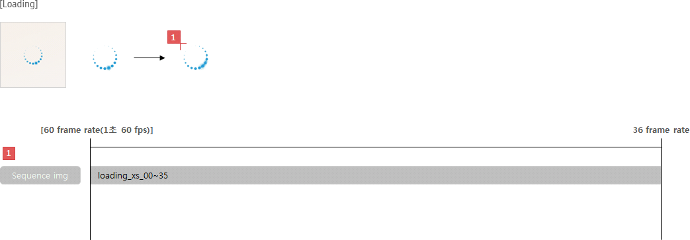
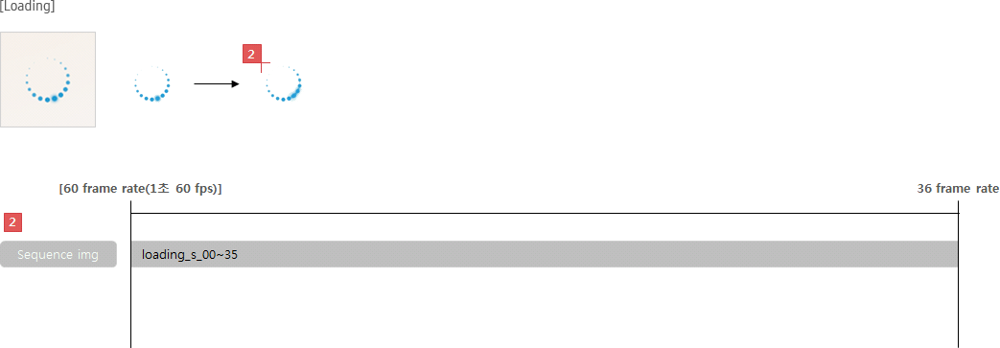
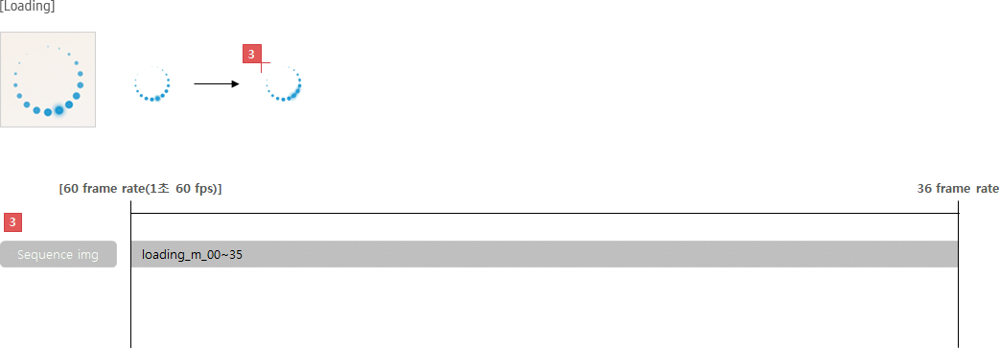
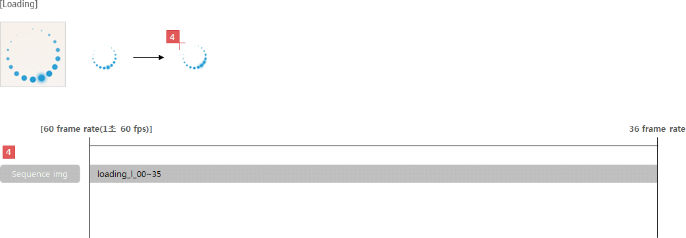
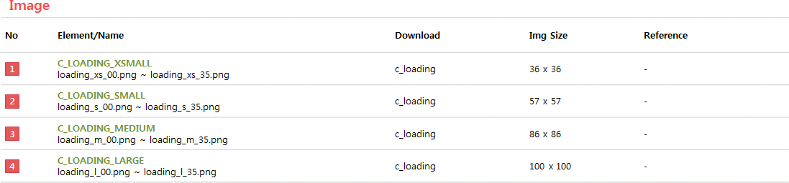

C_LOADING
- Definition
-
Loading allows user to recognize the operation ongoing.
- Usage
-
- - Loading displays status that content or screen is being loaded.
- - Use this component if it is not possible to measure the time or progress status.
- - If it is available to measure the time or progress status, use Progress circle instead of Loading. (**Refer to Progress Circle for details)
- - If users can interact with the current screen while loading, display this in the top right of the screen.
- - If users cannot interact with any other components or content in the current screen while loading, make the UI or content appear dimmed and display this in the center of the screen.
- - If the content cannot be displayed or the completion time is unpredictable while loading, display this over the whole content area.
- - While loading an app, display this with the app logo
- Specs
-
- Properties
-
- Loading consists of the following elements:
-
- 1. Loading icon (Mandatory)
- 1. Text (Optional)
-
- - You can provide users with information about the current loading status.
- - This will be defined by each function or application.
- Property Table
-
| C_LOADING |
|
PROPERTY
|
USE
|
VALUE
|
| Loading icon |
◎ |
|
| Text |
|
<<value>> |
- Visual
-
- Motion
-
- C_LOADING_WHITEXSMALL
- 
- C_LOADING_WHITESMALL
- 
- C_LOADING_WHITEMEDIUM
- 
- C_LOADING_WHITELARGE
- 

- *Tags :
-
Progress Circle,
Progress Bar